Au cœur de Biarritz,
ouverte sur la mer et les montagnes du pays-basque,
la Folie Boulart renaît enfin.
Château de fêtes, résidence de monarques, d’illustres personnages et d’artistes, la Folie Boulart ouvre ses portes aux hôtes privés, propriétaires éphémères d’un château de conte de fées aux décors précieux et fantasques.
Imaginé au terme d’un XIXe siècle triomphant, il s’est fait l’allié d’un luxe 2.0 ultra confortable et pourvu des dernières innovations technologiques.
Découvrez un lieu réinventé, une destination à usage exclusif offrant tous les services d’un Palace dans un hôtel particulier.
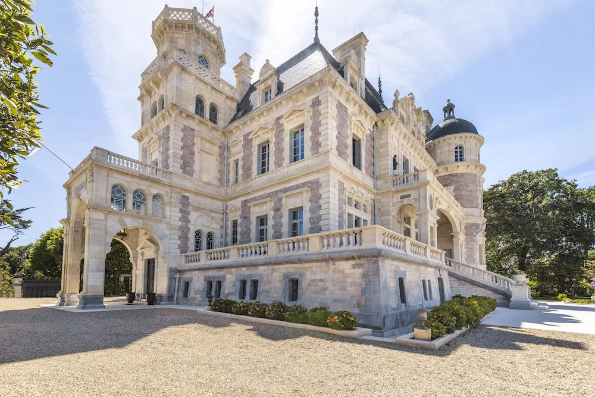
Un palais impérial
Charles Boulart souhaite de la hauteur et choisit, pour son futur palais, le plus bel emplacement de la station balnéaire, avec une vue imprenable sur l’océan Atlantique et la chaîne des Pyrénées.
À la recherche de ce qui se fait de meilleur pour la construction de sa belle demeure, il fait appel à l’architecte Joseph Louis Duc, grand nom de l’architecture parisienne distingué par Napoléon III. Pour le seconder, il recrute Louis-François Roux, membre de la société académique d’architecture de Lyon.
Trésors et artistes
Le palais sera le reflet des fastes du Second Empire. Des artistes de toute l’Europe interviennent pour réaliser de véritables chefs-d’œuvre : maître verrier, peintre, mosaïste, sculpteur, et les matériaux les plus prestigieux sont sélectionnés (marbres, bois précieux, pierres…).
Les têtes couronnées y sont reçues (la reine Victoria en 1889, le roi de Suède Oskar II, Édouard VII…) ainsi que des personnes illustres, des membres de la haute société et des artistes.
Partir à la découverte du château est un voyage fascinant au cœur d’un univers artistique.

Nos Suites
Les 8 suites de La Folie Boulart révèlent avec raffinement la quintessence de l’univers mondain du XIXe siècle. Murs tendus de soie, tentures de Damas, de taffetas, de velours, parquets de chêne, cheminées en marbre, décors sculptés, mobilier composé de pièces anciennes uniques…
Les volumes sont généreux et l’ambiance se module au gré des envies grâce à la tablette interactive qui permet de contrôler température, éclairage et écrans. Les salles de bains tout en marbre de Carrare et bleu Turquin sont spacieuses et pour la plupart baignées de lumière naturelle.
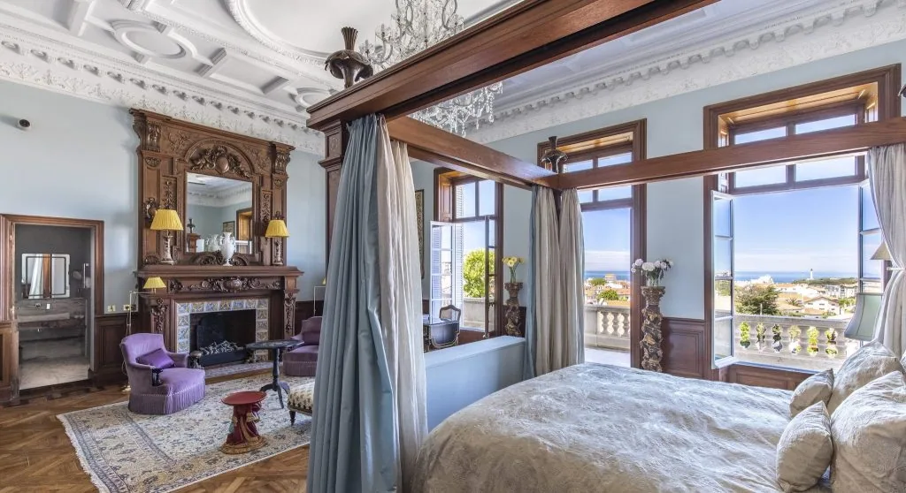
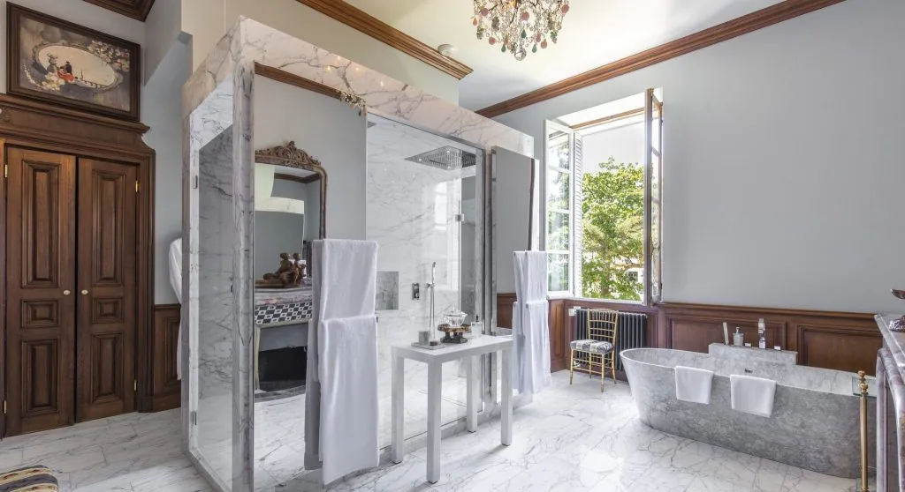
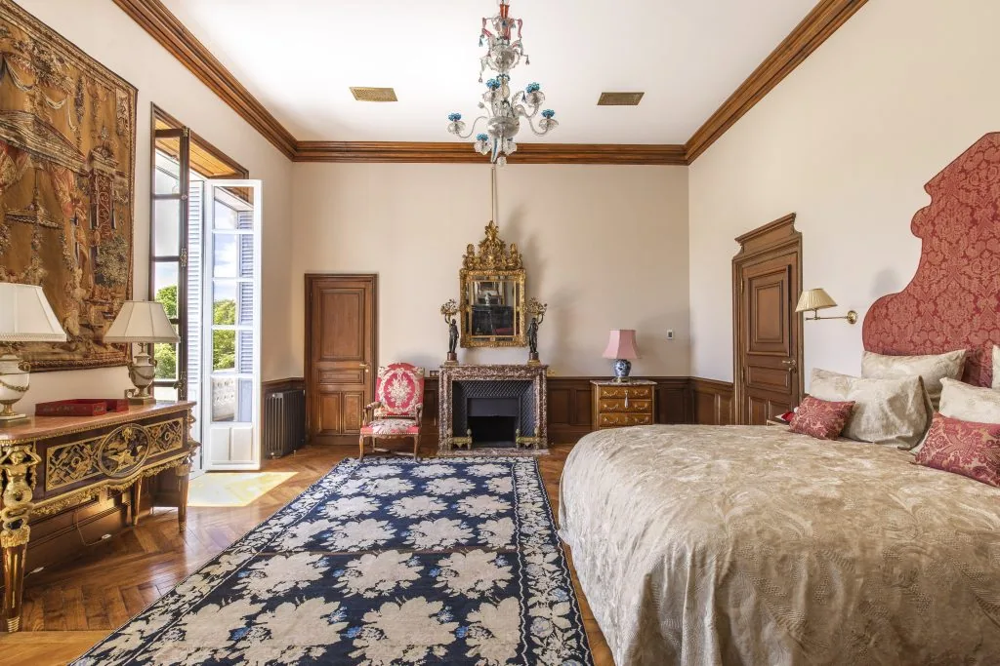


SPA & Fitness
Dans l’intimité de la demeure, un espace bien- être exceptionnel avec piscine intérieure, jacuzzi, hammam, sauna, salle de massage ayurvédique et salle de sport.
Cet écrin de bien-être est idéal pour recevoir des soins raffinés et sur mesure.
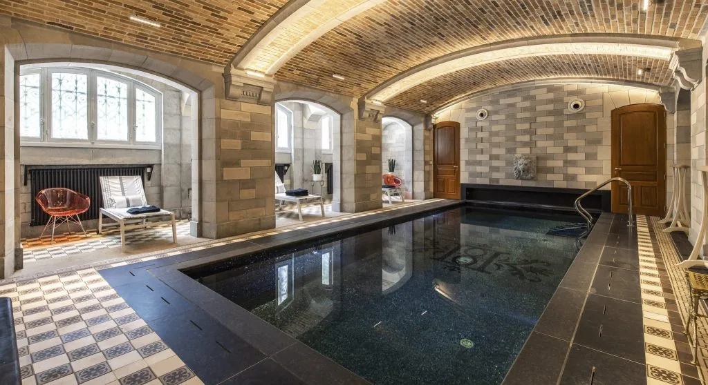
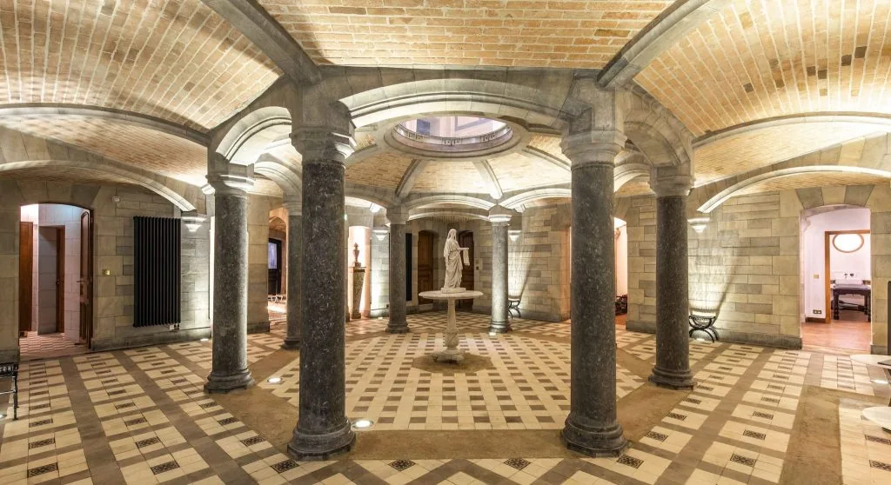
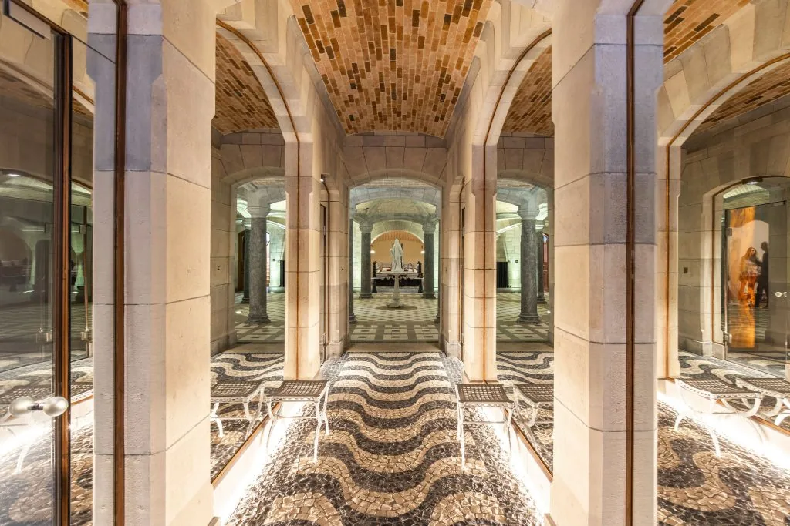
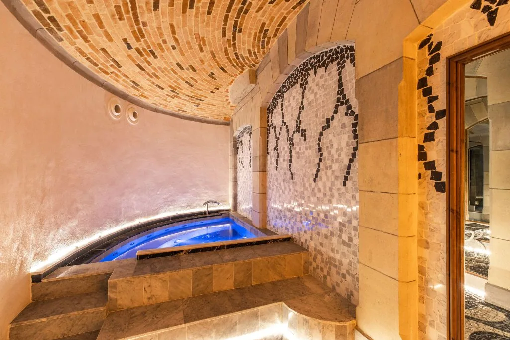
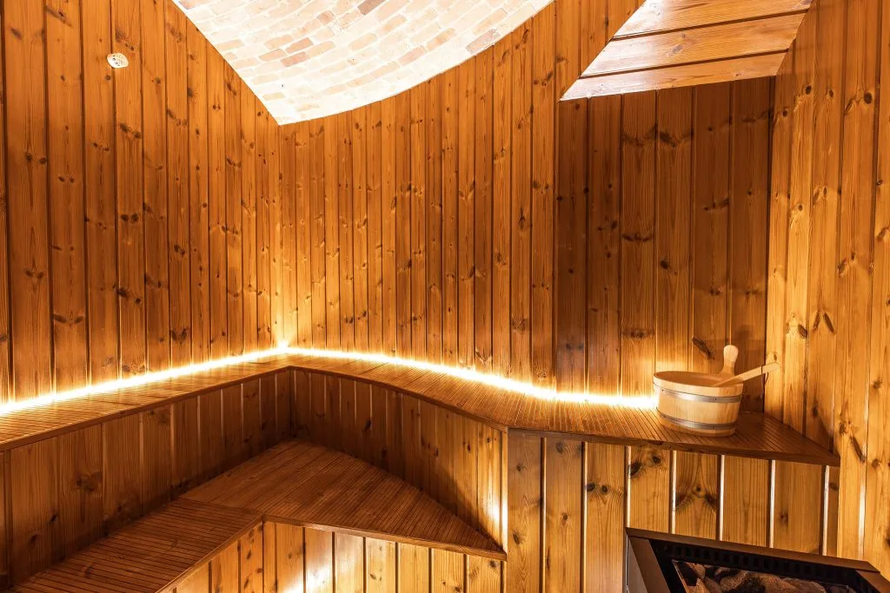
L’art culinaire
Des menus gastronomiques mêlant les traditions basques, landaises, espagnoles aux cuisines du monde les plus savoureuses, sont élaborés par le chef jean-marie gautier (meilleur ouvrier de france).
15 autres chefs étoilés, amis de la Folie Boulart, pourront également magnifier les repas de fêtes dans la grande salle à manger.
Déjeuners et brunchs, cocktails et dîners, sont aussi proposés sur les somptueuses terrasses.
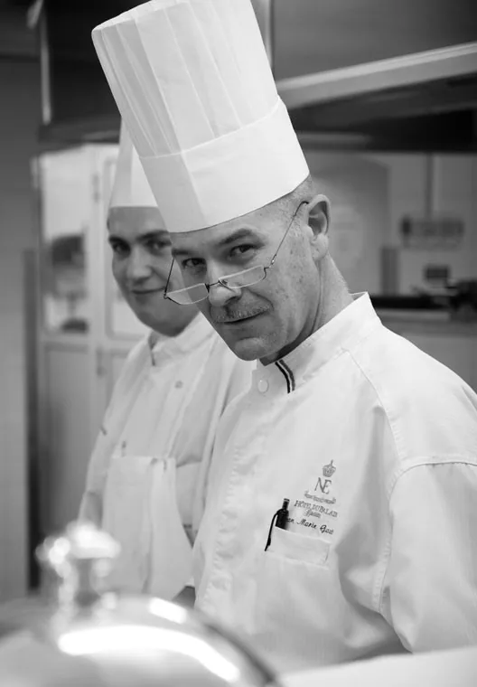
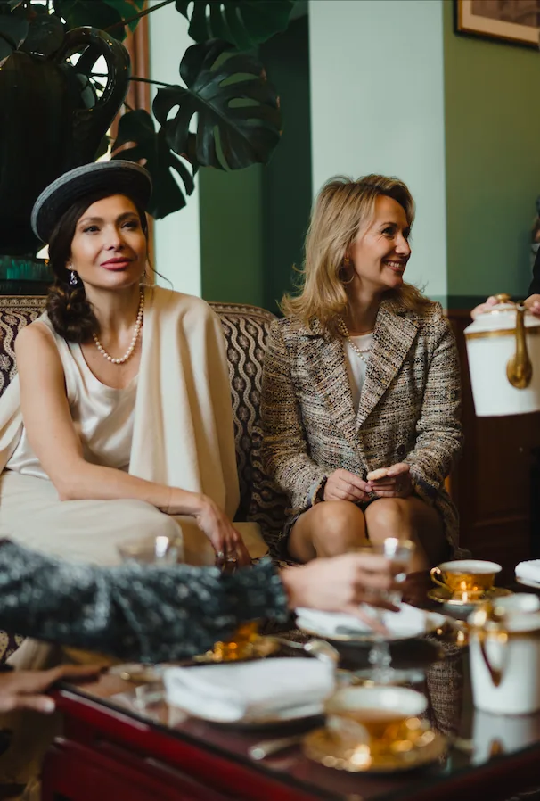
Une atmosphère de châtelain
Fort d’un siècle d’expertise dans l’accueil de réceptions, la Folie Boulart est le lieu idéal pour imaginer tout type d’événement. Espaces de réunion élégants, salons privés pour des expériences gastronomiques sur mesure ou salle de bal historique, la Folie Boulart accueille les plus beaux espaces de réception de Biarritz, la cité Impériale. Notre équipe événementielle est heureuse de vous accompagner pour imaginer un événement qui reflète le savoir-faire légendaire du Palais.
Réceptions
La Folie Boulart offre une grande salle de réception et de vastes terrasses avec vue sur la côte et les montagnes basques.
Le bar lounge, la salle de billard, les salons et boudoirs secrets, ouvrent sur un jardin unique au cœur de la ville,
avec son jardin creux d’inspiration antique, ses fontaines et ses arbres centenaires.

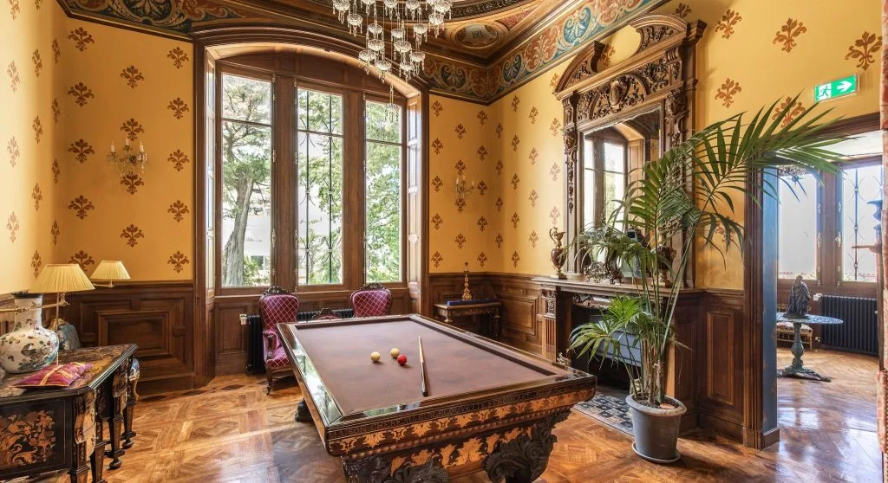
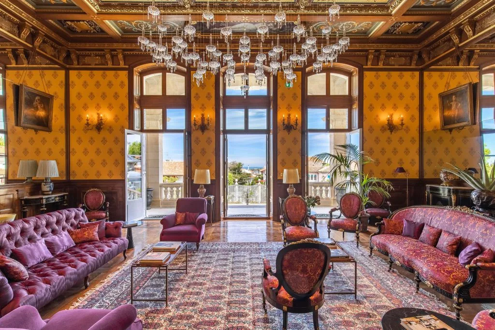
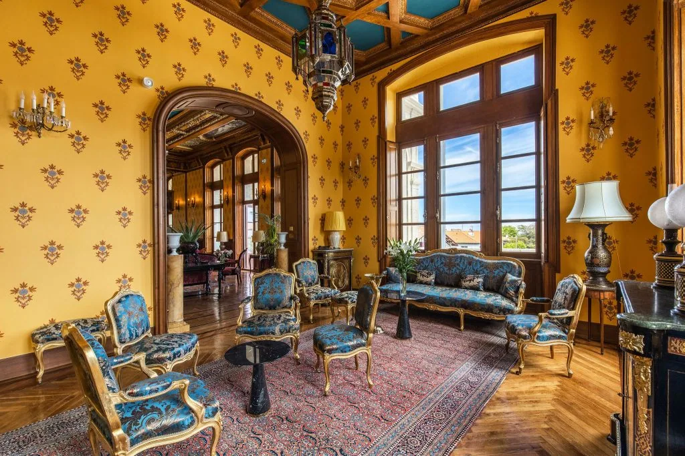
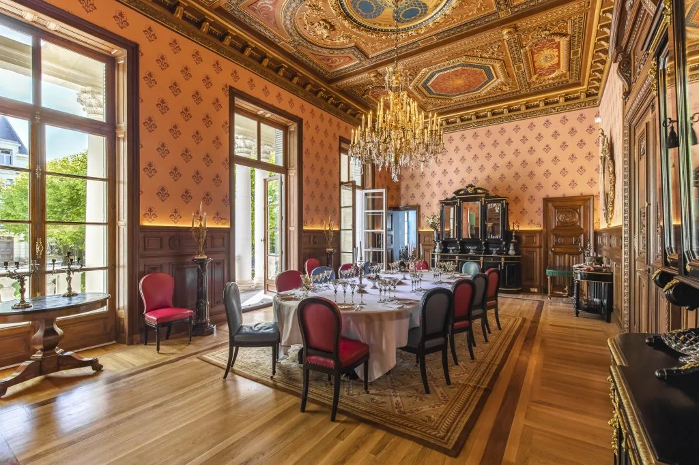

L’esprit d’un hôtel particulier
Fêtes, réceptions, chasses au renard dans les bois alentour s’enchaînent. Biarritz, qui ne connaît pas d’éclipse en dépit de la chute de Napoléon III en 1871, est un point d’attraction international. Têtes couronnées et noblesse se donnent rendez-vous à la belle saison à Biarritz. Edmond Rostand peut écrire : « À l’heure du thé, il y a chez Miremont moins de gâteaux que de reines et moins de babas au rhum que de Grands-Ducs».
Ses invités privilèges
Lieu de villégiature du Roi Édouard VII, il reçoit les plus illustres têtes couronnées, la Reine Victoria, Oskar II, la Duchesse Grazioli, le Duc et la Duchesse de Manchester, la Comtesse de Pourtalès, le Comte Larish, les grands-ducs Russes ainsi que l’élite de la haute société (notamment Oscar Wilde, Mr. and Mrs. Bodley, John Leishman, Amory Moore, et LR Wanamaker).

Quelques mots des Propriétaires, gardiens de cette Folie
La Folie Boulart est un véritable trésor : splendeurs de marbres, mosaïques du Maître vénitien Facchina, vitraux du virtuose Oudinot de la Faverie, peintures de Tony Faivre, sculptures de Hamel…
Les occupants se sont succédé au château ; périodes fastes et périodes de guerre se sont entrelacées au fil de l’Histoire. Et voici que ce lieu magnifiquement créé il y a cent quarante ans retrouve une vie intense.
Si la qualité exceptionnelle de son architecture et de sa décoration restait visible, la demeure recelait des trésors encore enfouis sous peintures, moquettes, ciments et plancher.
Les travaux de mise en valeur menés depuis 2015 ont révélé des merveilles qui nous font vibrer jusqu’à ce jour : toiles, fresques, sculptures, mosaïques et pierres.
Grâce au travail passionné de Monsieur Badetz, ancien conservateur général du musée d’Orsay, le mobilier et les décors d’époque ont été savamment magnifiés et réintégrés dans leur écrin d’origine.
Notre objectif était de redonner à La Folie Boulart son lustre originel tout en la dotant d’une technologie de pointe invisible qui a été récompensée en 2022 par le 1er prix SmartBuilding Europe.
Nous rendons hommage à Charles Boulart, aux précédents propriétaires ainsi qu’à tous les artisans, artistes, hommes et femmes qui nous permettent d’offrir aujourd’hui à nos hôtes une expérience unique, un séjour empli de beauté, de raffinement et d’élégance à la française qui illustrent si bien les vers du poète Charles Baudelaire appris dans notre enfance, « Là, tout n’est qu’ordre et beauté, Luxe, calme et volupté ».
Brigitte et Pierre Delalonde
Nous sommes heureux de pouvoir partager ce Palais avec les Biarrots et nos hôtes esthètes du monde entier.